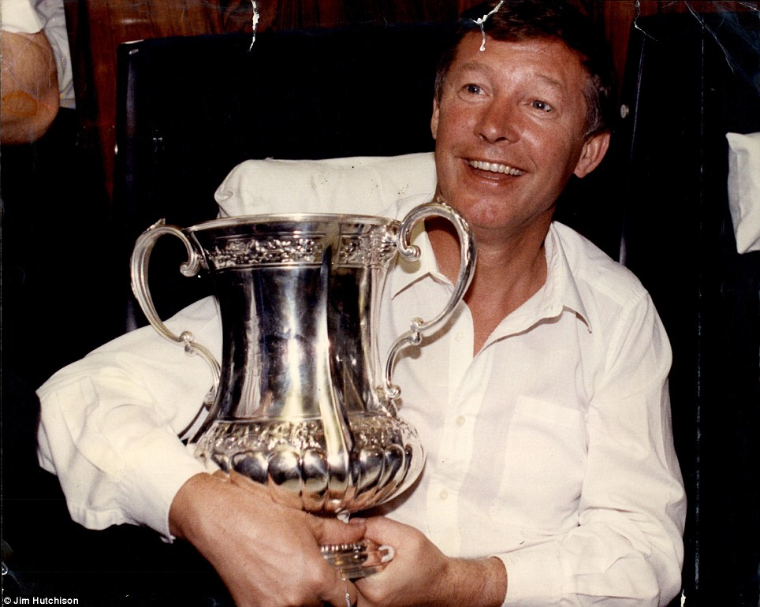
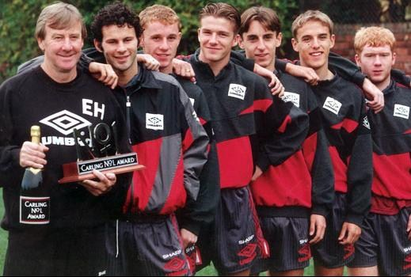
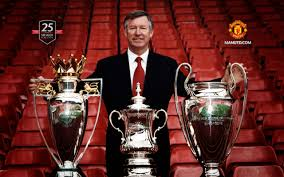
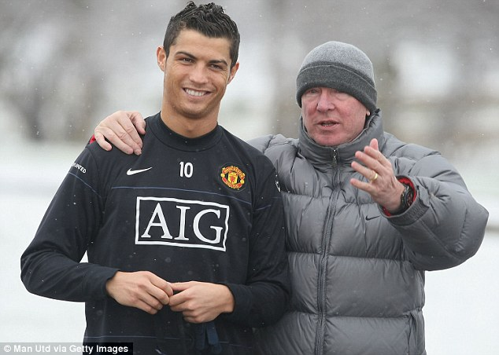
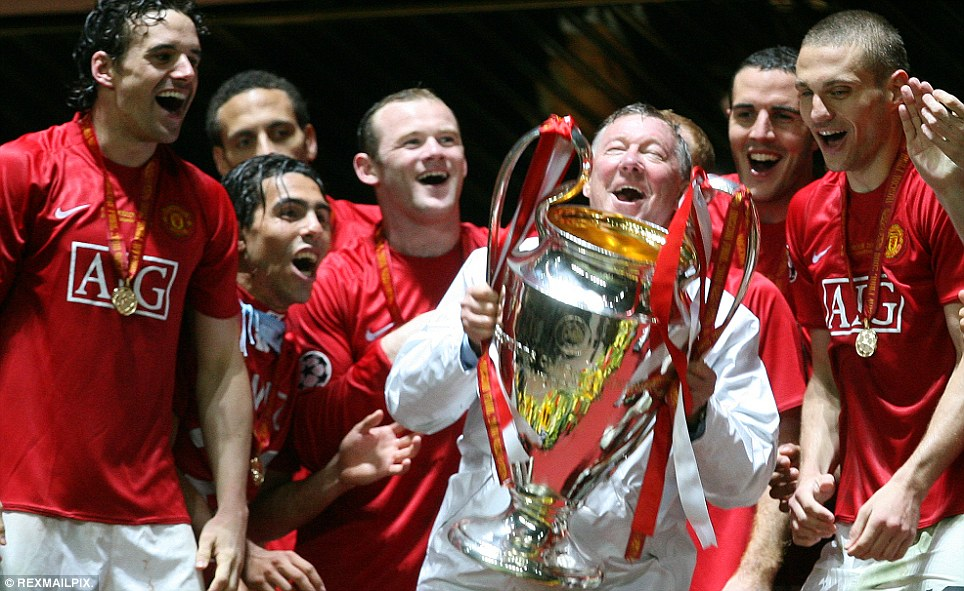
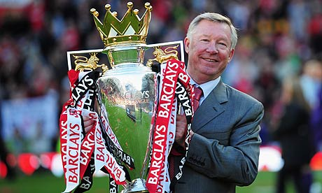

In 1986 Sir Alex Ferguson becomes Manchnester United manager. Four years later in 1990 he would wins his first trophy with Manchester in the FA Cup.

In 1996 Sir Alex wins Premier League, while introducing future superstars; David Beckham, Ryan Giggs, Paul Scholes and Gary Neville

Sir Alex wins a historic Premier League-FA Cup-Champions League treble in 1999

Sir Alex lures Cristiano Ronaldo to United for 19 million Euros in 2003. The rest would become history.

Wins Champions League for the second time in 2008 with victory in a penalty shootout over Chelsea.

Reclaims Premier League title from Manchester City, winning it for 13th time in 2013. Sadly retires.